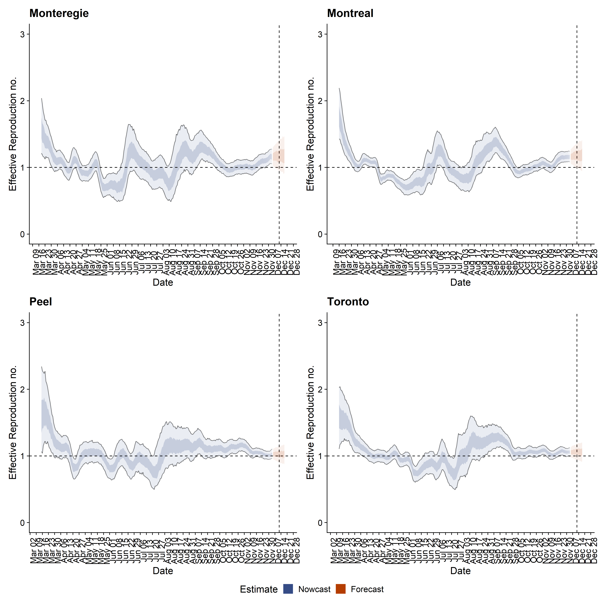
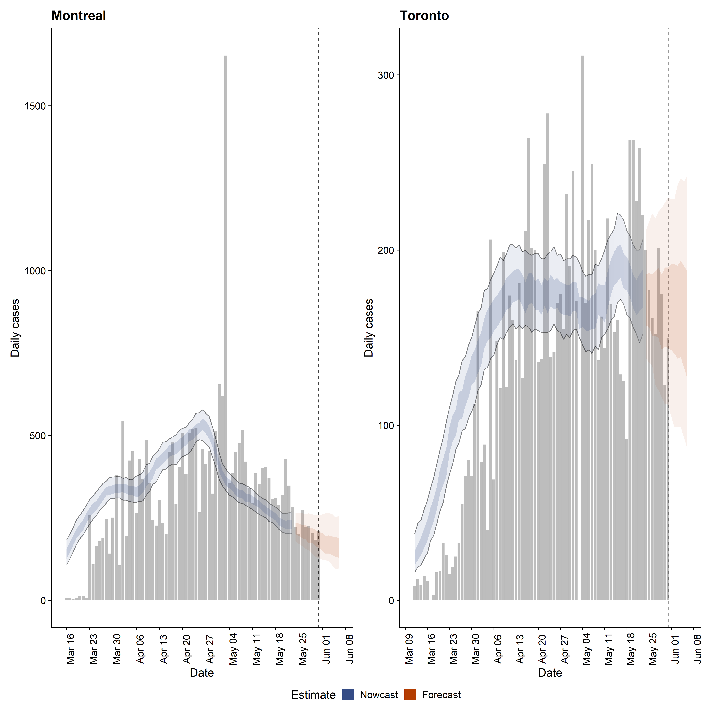
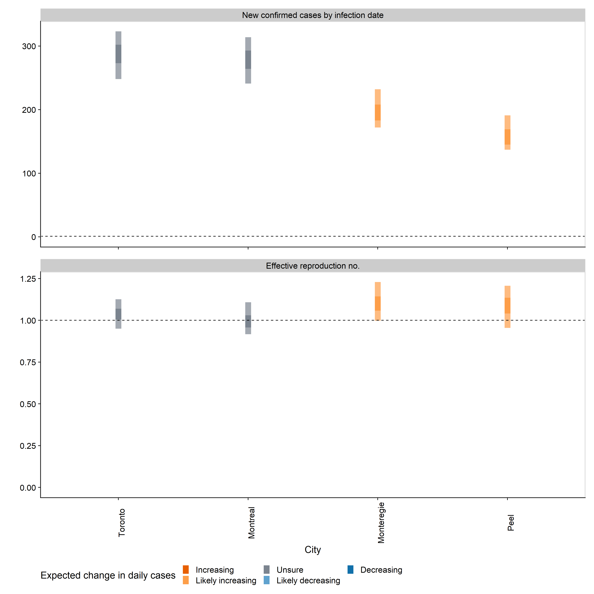

Date Created: Jun 01, 2020
Date Updated: Sep 13, 2020
For estimation methods please see https://epiforecasts.io/covid/methods.html.
Complete model output generated from the EpiNow R package is available at https://github.com/Kuan-Liu/Kuan-Liu.github.io/tree/master/docs/city-summary. You can find here, 1) all figures in png format, 2) estimated daily new cases with 50% and 90% credible intervals in case.csv file, 3) estimated and forecast temporal R0 with 50% and 90% Credible intervals in rt.csv file.
| City | New confirmed cases by infection date | Expected change in daily cases | Effective reproduction no. |
|---|---|---|---|
| Monteregie | 30 (17 – 41) | Unsure | 1.1 (0.8 – 1.3) |
| Montreal | 55 (38 – 68) | Likely increasing | 1.1 (0.9 – 1.4) |
| Peel | 46 (27 – 60) | Unsure | 1 (0.8 – 1.3) |
| Toronto | 75 (55 – 92) | Increasing | 1.2 (1 – 1.5) |


